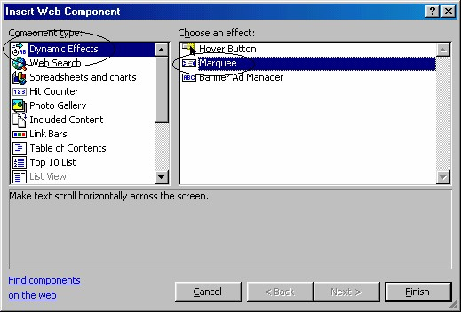
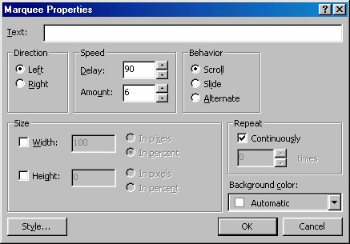
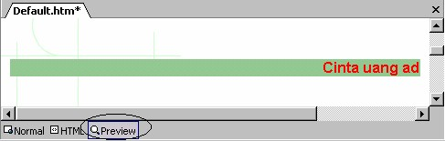
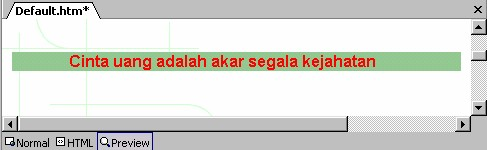
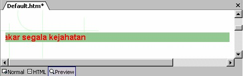

6 Animasi Marquee (Web Component)
Internet Explorer mendukung fasilitas yang dinamakan Marquee, yaitu banner berisi
teks bergerak.
Marquee juga bisa berisi sebuah link, namun jika Anda tidak ingin terhubung ke
manapun, Anda tinggal menghilangkan beberapa langkah awal contoh di bawah ini.
6.1 Pembuatan marquee
Cara selengkapnya pembuatan marquee adalah:
1. Pada tampilan Page, klik lokasi pemasangan marquee, atau pilihlah teks yang
akan ditampilkan sebagai marquee.
2. Aktifkan Insert _ Web Component. Muncul kotak dialog Insert Web
Component.

Gambar 8.40 Kotak dialog Insert Web Component
3. Pada bidang kiri, klik Dynamic Effects. Pada bidang kanan, klik ganda
Marquee. Muncul kotak dialog Marquee Properties.

Gambar 8.41 Kotak dialog Marquee
4. Pada kotak isian Text, tuliskan teks yang akan dijadikan marquee, misalnya
“Cinta uang adalah akar segala kejahatan”.
5. Pada kelompok Direction, tentukan arah pergerakan, yaitu Left dari kanan ke
kiri, sedangkan Right dari kiri ke kanan.
6. Tentukan kecepatan pergerakan pada kelompok Speed.
• Delay adalah angka lamanya pengunduran (dalam satuan milidetik).
Masing-masing huruf pada marquee memang senantiasa berlompatan.
• Amount adalah jumlah pixel yang loncat setiap kalinya. Makin kecil kedua
angka tersebut maka scrolling-nya akan lebih halus. Delay kecil dikombinasi
dengan Amount besar akan menghasilkan scroll lebih cepat.
7. Kemudian tentukan sifat marquee pada kelompok Behavior.
• Pilihlah Scroll untuk membuat teks bergerak ke ujung marquee yang satu
dan menghilang di ujung satunya.
• Pilih Slide untuk membuat teks bergerak ke ujung yang satu dan akan
berhenti pada saat teks itu tiba di ujung yang lain.
• Dan pilihlah Alternate untuk membuat teks bergerak ke sana ke mari di
sepanjang marquee.
8. Tentukan ukuran marquee pada kotak Size . Anda bisa mengatur lebarnya dalam
persentase tertentu sehingga marquee tersebut tetap berukuran proporsional
terhadap window browser.
9. Secara default marquee diatur untuk menggulung terus menerus. Tetapi Anda
mungkin ingin agar berjalan beberapa saat lalu berhenti. Untuk itu nonaktifkan
kotak cek Continuously dan ketikkan sebuah angka dalam kotak Times.
Perhatikan, jika Anda menggunakan pengaturan Slide, marquee ini akan
bergerak sekali, meskipun kotak cek Continuously dalam keadaan terpilih.
10. Kalau Anda ingin memasang warna latar belakang, gunakan Background
Color. Jika browser tidak dapat menampilkan marquee, maka warna latar juga
akan hilang.
11. Klik OK.
Kemudian Anda bisa mencobanya dengan klik tab Preview. Berikut ini contoh uruturutan
tiga tampilan marquee yang bergerak dari kanan ke kiri, Gambar 8.42 sampai
dengan Gambar 8.44.

Gambar 8.42 Tampilan pertama

Gambar 8.43 Tampilan urutan berikutnya

Gambar 8.44 Tampilan urutan beriutnya
Setelah mencobanya, kembali ke tab Normal, Anda bisa mengatur format teks sesuai
selera Anda.
Untuk mengedit marquee, pada halaman klik kanan marquee lalu klik perintah
Marquee properties. Kotak dialog akan tampil dan bisa Anda gunakan untuk
mengedit marquee.
6.2 Mengedit marquee
Untuk mengubah ukuran tombol, Anda bisa langsung mengubahnya pada halaman,
yaitu klik marquee la lu drag handle.
Sedangkan untuk pengeditan properti lainnya, Anda harus menggunakan kotak
dialog, dengan cara:
1. Pada halaman, klik kanan marquee.
2. Klik perintah Marquee Properties, muncul kotak dialog Marquee Properties.
3. Selanjutnya Anda bisa mengubah properti sesuai keperluan.
4. Klik OK.
Copyright © Herlan Lesmana
Created with the Freeware Edition of HelpNDoc: Free help authoring environment